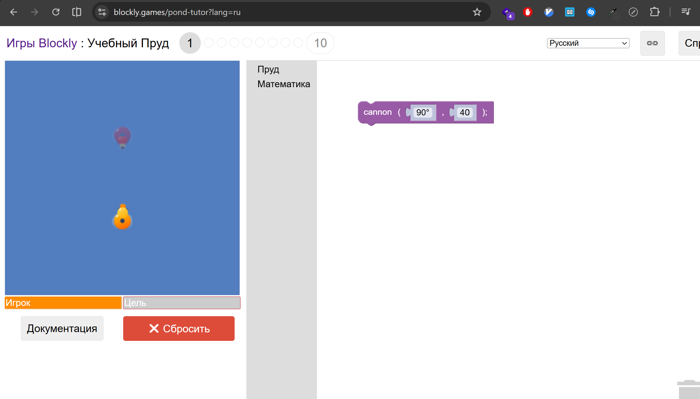
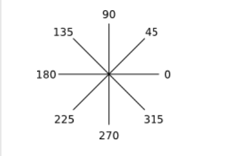
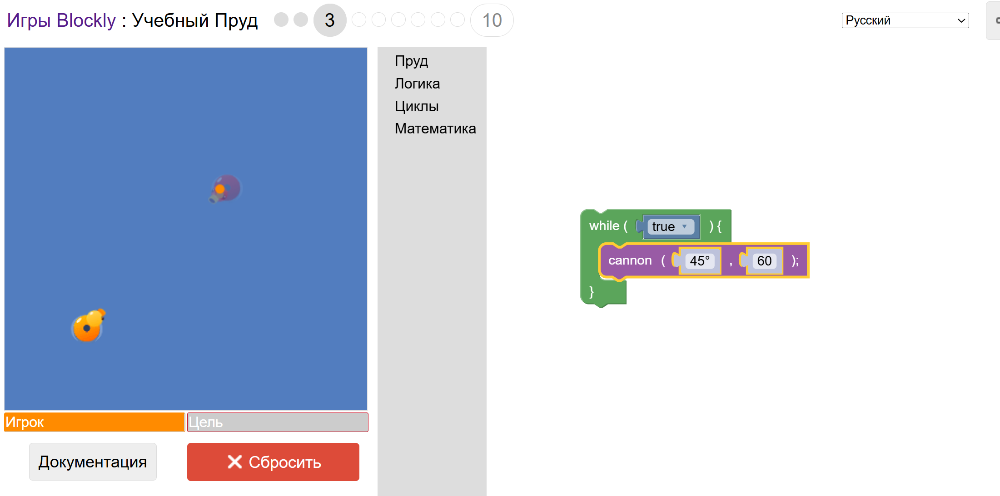
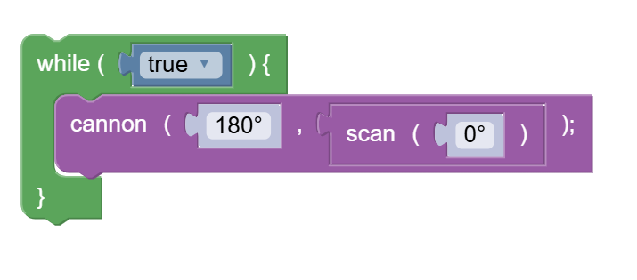

Google Blockly
Ответ:, то его не подсматриваем -- стараемся сами.Если есть тексты и картинки -- их читаем обязательно.
Уровень 1
Ответ:

Уровень 2
На этом уровне надо руками печатать команды.
Конкретнее, нужно напечатать команду: cannon(угол, расстояние), где:
угол -- это угол стрельбы. Угол стрельбы уточки определяется такими координатами:

расстояние -- это расстояние стрельбы
Уровень 3
Ответ:

Уровень 4
Перепечатай структуру из ответа Уровня 3, но поменяй значения -- cannon(угол тут поменяй, расстояние тут поменяй)
Уровень 5
Начни с этой конструкции:

Уровень 6
Начни с этой конструкции:
while (true) {
cannon(угол, расстояние)
}
, где:угол -- это угол стрельбы. Угол стрельбы уточки определяется такими координатами:
расстояние -- это расстояние стрельбы.
scan(0) -- расстояние можно автоматически вычислять используя эту команду
Уровень 8
Один из способов прохождения:
Плыть и столкнуться с уточкой-противником
Для этого можно использовать swim(угол, скорость)